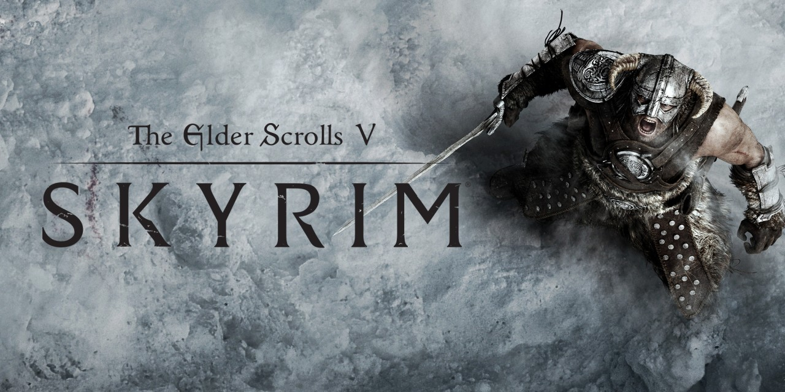

Lanzado en 1998 para Nintendo 64, Ocarina of Time es un juego de acción y aventura que sigue a Link en su misión para detener al malvado Ganondorf. A través de un vasto mundo tridimensional, Link debe resolver acertijos, conquistar mazmorras y recolectar objetos mágicos, como la Ocarina, que le permite manipular el tiempo y el entorno. Es aclamado por su narrativa envolvente, innovador sistema de combate y su influencia en el desarrollo de videojuegos.
Grand Theft Auto V
Puntaje Promedio: 97/100
Lanzado en 2013, Grand Theft Auto V es un juego de acción y aventura en un mundo abierto situado en la ficticia ciudad de Los Santos. Los jugadores alternan entre tres personajes: Michael, Franklin y Trevor, mientras llevan a cabo robos y enfrentan conflictos personales. El juego es conocido por su narrativa rica, un mundo detallado y una amplia gama de actividades, desde misiones de historia hasta deportes y eventos en línea.
Super Mario Galaxy
Puntaje Promedio: 97/100
Super Mario Galaxy, lanzado para la Wii en 2007, es uno de los títulos más aclamados de la franquicia de Mario. El juego sigue a Mario en su misión para rescatar a la Princesa Peach, quien ha sido secuestrada por Bowser y llevada al centro del universo. A diferencia de los juegos anteriores, Super Mario Galaxy introduce una jugabilidad basada en la gravedad y el uso de pequeños planetas y estructuras esféricas.
Super Mario Odyssey
Puntaje Promedio: 97/100
Lanzado en 2017 para Nintendo Switch, Super Mario Odyssey es un juego de plataformas en 3D que sigue a Mario en su viaje para rescatar a la Princesa Peach de Bowser. Mario utiliza su nuevo compañero, Cappy, para poseer objetos y enemigos, lo que le otorga habilidades únicas. Con niveles diversos y un mundo expansivo para explorar, el juego es aclamado por su jugabilidad creativa, diseño de niveles y estilo artístico vibrante.
Halo: Combat Evolved
Puntaje Promedio: 97/100
Halo: Combat Evolved, lanzado en 2001 para la Xbox, es el primer juego de la icónica saga Halo, desarrollado por Bungie. Es un shooter en primera persona que revolucionó el género tanto por su jugabilidad como por su narrativa envolvente, ambientada en un universo de ciencia ficción.
Bioshock
Puntaje Promedio: 96/100
BioShock, lanzado en 2007 por 2K Boston (ahora conocido como Irrational Games), es un juego de disparos en primera persona que combina elementos de rol y horror, con una narrativa profunda y filosófica. Ambientado en una utopía submarina, el juego es conocido por su atmósfera inmersiva, su estilo visual distintivo y su historia provocativa.
The Legend of Zelda: Breath of the Wild
Puntaje Promedio: 96/100
Lanzado en 2017 para Nintendo Switch y Wii U, Breath of the Wild es un juego de acción y aventura en un mundo abierto que reinventa la clásica fórmula de Zelda. Los jugadores controlan a Link, quien despierta de un sueño de 100 años para descubrir que el reino de Hyrule ha sido devastado por Calamity Ganon. Con un vasto entorno para explorar, los jugadores pueden escalar montañas, cocinar, resolver acertijos y enfrentarse a enemigos en un sistema de combate dinámico. El juego enfatiza la exploración y la libertad, permitiendo a los jugadores abordar los desafíos de diversas maneras. Su arte vibrante, diseño de mundo detallado y narrativa inmersiva han recibido aclamación universal, convirtiéndolo en uno de los mejores juegos de todos los tiempos.
Half life 1
Puntaje Promedio: 96/100
Half-Life, lanzado en 1998 por Valve, es un juego de disparos en primera persona que revolucionó el género por su enfoque narrativo inmersivo, eliminando las cinemáticas tradicionales y contando la historia a través de la propia jugabilidad. Es ampliamente considerado uno de los mejores juegos de la historia.
Half life 2
Puntaje Promedio: 96/100
Half-Life 2, lanzado en 2004 por Valve, es la esperada secuela del revolucionario Half-Life. Es ampliamente reconocido por su avance en gráficos, física y narrativa en el género de disparos en primera persona, utilizando el motor gráfico Source.
Super Mario 64
Puntaje Promedio: 96/100
Super Mario 64, lanzado en 1996 para la Nintendo 64, es un juego de plataformas en 3D que marcó un hito en la historia de los videojuegos. Es considerado uno de los mejores juegos de todos los tiempos y es pionero en la transición de juegos de plataformas bidimensionales a entornos tridimensionales.
Red Dead Redemption 2
Puntaje Promedio: 96/100
Desarrollado por Rockstar Games y lanzado en 2018, Red Dead Redemption 2 es un juego de acción y aventura en un mundo abierto ambientado en el oeste estadounidense a finales de 1800. Los jugadores asumen el papel de Arthur Morgan, un forajido que lucha por sobrevivir mientras la civilización avanza. El juego se destaca por su narrativa profunda, personajes memorables y un entorno detallado que permite una experiencia inmersiva, con elementos de exploración, caza y combate.
Resident Evil 4
Puntaje Promedio: 96/100
Resident Evil 4, lanzado en 2005 por Capcom, es un juego de acción y horror en tercera persona que revolucionó tanto la franquicia Resident Evil como el género de juegos de supervivencia. Es conocido por su cambio hacia una jugabilidad más orientada a la acción, con un sistema de cámara sobre el hombro y controles mejorados.
Portal 2
Puntaje Promedio: 95/100
Portal 2, lanzado en 2011 por Valve, es un juego de rompecabezas en primera persona que sigue la innovadora jugabilidad y el humor característico de su predecesor, Portal. Es ampliamente considerado uno de los mejores juegos de su género debido a su diseño de niveles, narrativa creativa y su ingeniosa combinación de rompecabezas y humor.

The elder scrolls V: Skyrim
Puntaje Promedio: 94/100
The Elder Scrolls V: Skyrim, lanzado en 2011 por Bethesda Game Studios, es un juego de rol de mundo abierto que se desarrolla en la región de Skyrim, parte del continente ficticio de Tamriel. Es el quinto título de la serie Elder Scrolls y se ha convertido en uno de los juegos más aclamados y vendidos de todos los tiempos.
Metal Gear Solid
Puntaje Promedio: 94/100
Metal Gear Solid, lanzado en 1998 por Konami y dirigido por Hideo Kojima, es un juego de sigilo y acción que revolucionó el género al combinar una narrativa compleja con mecánicas de juego innovadoras. La trama profunda y los personajes bien desarrollados lo convirtieron en uno de los títulos más icónicos de la era de los 90.
The Witcher 3: Wild Hunt
Puntaje Promedio: 93/100
Lanzado en 2015, The Witcher 3: Wild Hunt es un RPG de acción que sigue a Geralt de Rivia, un cazador de monstruos, en su búsqueda por encontrar a su hija adoptiva. Con un vasto mundo abierto, ricas misiones secundarias y decisiones que afectan la narrativa, el juego es aclamado por su historia profunda, personajes complejos y un sistema de combate dinámico. También destaca por su impresionante arte y su banda sonora envolvente.
Minecraft
Puntaje Promedio: 93/100
Lanzado en 2011, Minecraft es un juego de construcción y supervivencia en un mundo abierto compuesto por bloques. Los jugadores pueden explorar, recolectar recursos, construir estructuras y crear su propio entorno. Con modos de juego como supervivencia y creativo, Minecraft fomenta la creatividad y la colaboración en un entorno multijugador. Su estilo visual pixelado y su enfoque en la exploración y la construcción han hecho de Minecraft un fenómeno cultural.
Doom
Puntaje Promedio: 93/100
DOOM, lanzado en 1993 (aunque a veces erróneamente se refiere a su influencia en juegos posteriores como si fuera de 1996), es uno de los videojuegos más influyentes de todos los tiempos. Desarrollado por id Software, DOOM es un juego de disparos en primera persona que ayudó a definir el género FPS (first-person shooter) y establecer muchos de los estándares actuales para los juegos de acción.
Final Fantasy: VII
Puntaje Promedio: 92/100
Final Fantasy VII, lanzado en 1997 por Square (ahora Square Enix), es uno de los RPG más icónicos de todos los tiempos y un punto de referencia en la historia de los videojuegos. Con una narrativa profunda, personajes memorables y un innovador sistema de combate, Final Fantasy VII ayudó a popularizar el género de los juegos de rol japoneses (JRPG) a nivel mundial y destacó por sus avances en gráficos y tecnología, especialmente con sus escenas cinematográficas.
Dark souls
Puntaje Promedio: 89/100
Dark Souls, lanzado en 2011 por FromSoftware, es un juego de rol de acción conocido por su desafiante jugabilidad, diseño de mundo intrincado y narrativa implícita. Es aclamado por redefinir el género de acción-RPG, con un enfoque en la dificultad, la paciencia y el descubrimiento. El juego forma parte de la trilogía Souls y es una secuela espiritual de Demon's Souls.